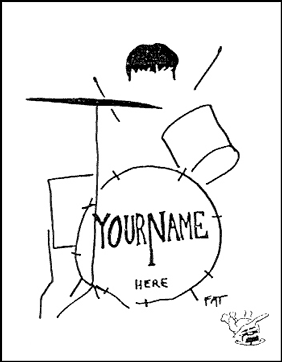

|
Lunch With The Fatman | 1, 2, 3
"The Next Beatles"
Hi. Sit down. What are you having? Welcome to Lunch with the Fat Man.
Any inspiration, no matter from where it comes, is a wonderful thing. Because I sincerely believe this, I make a point never to howl like a bound dog when someone is singing bad harmonies, and you, as a Follower of the Fat, shouldn’t either.
I've seen a lot of musical inspiration come from equipment. In days of old, a new instrument would inspire a musician to play more, and experiment with different styles. Later, pedals and effects joined the creative muses. More recently, music magazines and stores have become walls of computer-powered inspiration. Sequencers, patch programs, drum machines, MIDI controllers. Go to your local music store and listen. You’ll hear noodling, noodling, and more noodling. Maybe you’ll be the one there that my other readers hear noodling. It's a great feeling to tie into a new piece of gear. Noodle, noodle, noodle. Oh boy, this sounds " great. Diddley waddley, diddley waddley. Isn't this musical inspiration a blessing? Only the principle of the preceding paragraph keeps me from howling like a bound dog.
 All right, I was sincere in saying that all inspiration is valuable. While the inspiration to play more is good, the inspiration to play better is better, and may not come from technology. Let's examine it in more detail.
We get a paycheck. We rush to the store, ostensibly to buy a new set of strings. We see a gadget that we read about in Music Technology. We play it. It makes us sound great. We break out into a sweat. We play on the thing hard for a week, until we get "buyer's regret," then unplug it. It sits on top of our amp until we need to move it to put our beer there.
Perhaps we can separate the long-term usefulness of a piece of musical merchandise (for after all, even the finest Bosendorfer on the sales floor is only musical merchandise until you buy it) from the thrill of playing it in the store. How? By remembering that good tone, or anything else that a piece of equipment can give us, is only the polish on the surface of good music.
The things that equipment can give to a musician fall into categories of being either tonal aids or organizational aids.
I find that some equipment inspires musicians to play more. This usually applies to instruments, amps, and effects -- items that improve or change tone. Once your music is happening, good tone is necessary, but fairly quickly and easily obtained with your recording advance money. The lion's share of the good that comes from the post-purchase burst of dedication is that practice helps open the paths that allow true musical ideas to travel from the heart to the fingers. It's independent of the specific piece of gear that was purchased. Playing more improves your music, tone only improves your tone.
The equipment that acts as compositional aids, such as sequencers, drum machines and interactive music programs, give us the invaluable ability to organize, access, and manipulate the vast amounts of data that make up a musical composition. The gifts they give are speed and a release from the drudgery of data manipulation. I would be as loathe to compose without my sequencer as I would be to write without my word processor. But my word processor has not improved my ability to write. And my word processor can cut, paste, and manipulate sentences, yet I don't write letters composed of variations on one sentence. Likewise; just because a music program can repeat, invert, and manipulate the rhythm of a passage there is no law that says you have to use all of the tricks on each composition.
Special thanks to David Roach, whose words to me were, more or less, "I keep having to tell people not to let technology dictate the way they play. Why don't you write an article about that?" Admirable talk from a musical equipment salesman.
Say, this was great. Let's have lunch more often.

|